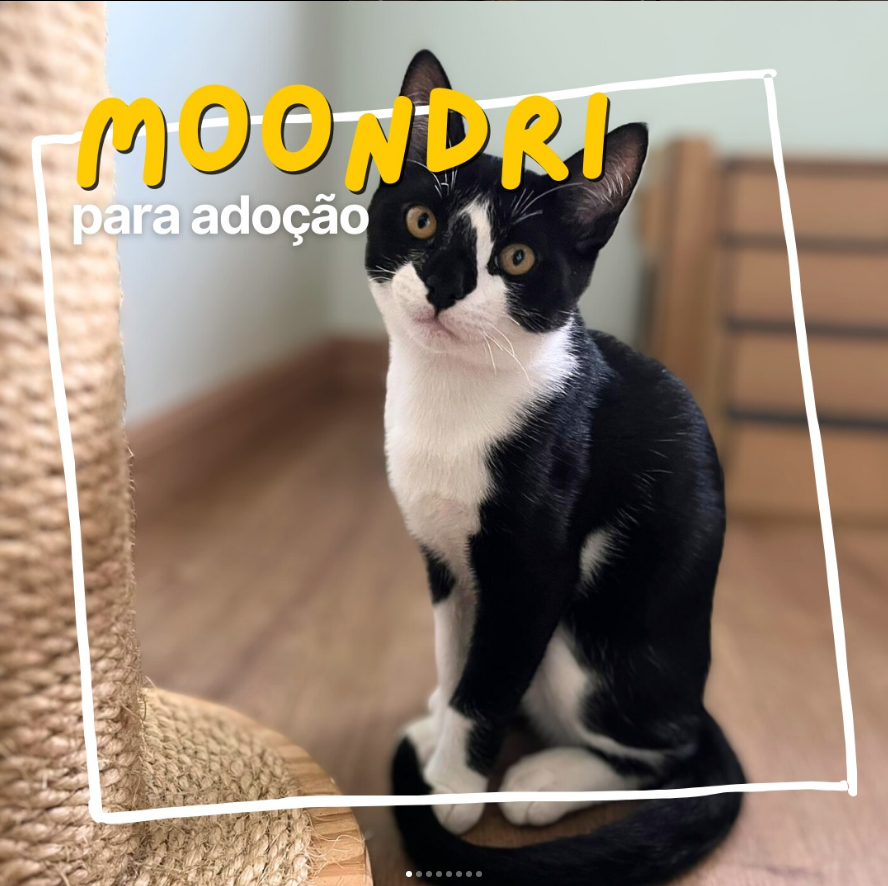
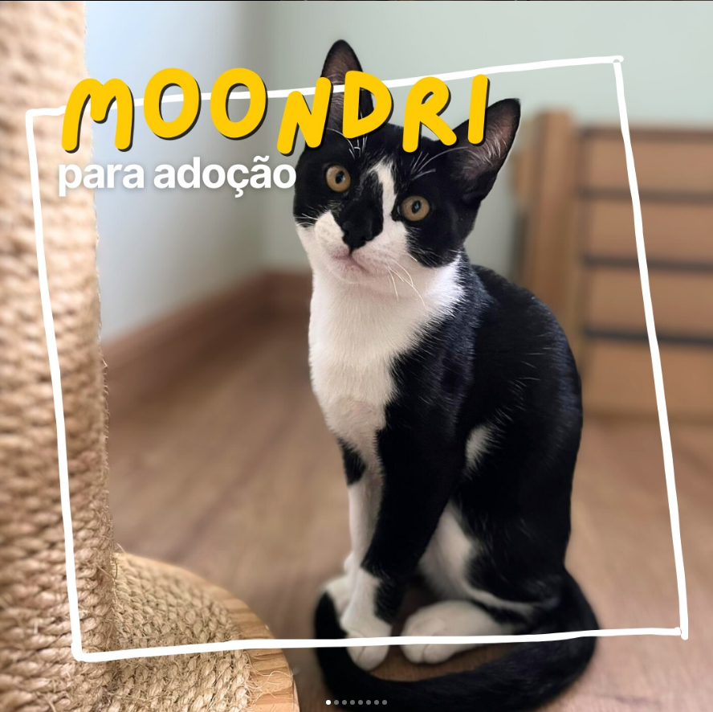
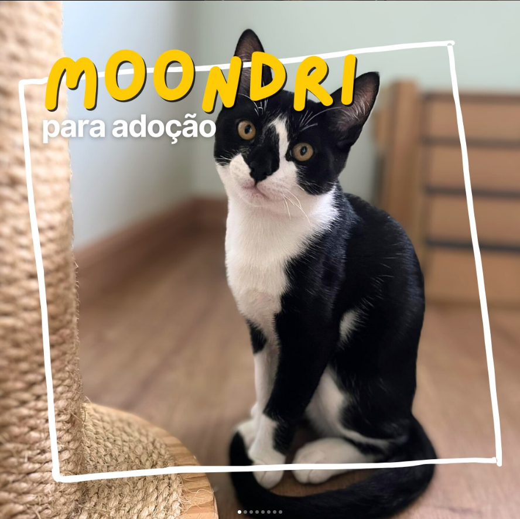

CRAZY CAT GANG
Quem chegou até aqui deve estar se perguntando, do que se trata essa ong? Pois bem, somos um ONG formada majoritariamente por mulheres, e que busca instruir a sociedade em relação ao abandono, cuidados com os felinos e etc.
Resgatar é uma das nossas frentes, mas acreditamos que sem instruir, ajudar e atuar nas comunidades, o número de abandono e o número de animais de rua nunca será reduzido.
Assim como uma grande empresa, a ONG busca ser organizada e através de processos de gestão, coordenar e expandir a nossa atuação na cidade de Curitiba.
Sempre nos dizem que somos burocráticos, mas é com organização, processos e comprometimento que as coisas funcionam.
Quer nos ajudar? Faça uma doação de qualquer valor para o PIX da ong: ccgcwb@gmail.com
Tem uma empresa e quer doar para uma ong séria e que faz um super trabalho social em Curitiba?
Escreva para parceria@crazycatgang.com.br
Nossos gatinhos agradecem!
